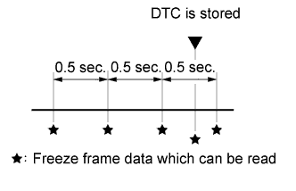

AUTOMATIC TRANSMISSION SYSTEM > DIAGNOSIS SYSTEM |
| EURO-OBD |
When troubleshooting Europe On-Board Diagnostic (Euro-OBD) vehicles, the vehicle must be connected to an OBD scan tool (complying with ISO 15765-4). Various data output from the vehicle ECM can then be read.
 |
Euro-OBD regulations require that the vehicle on-board computer illuminate the Malfunction Indicator Lamp (MIL) on the instrument panel when the computer detects a malfunction in any of the following:
To check DTCs, connect the intelligent tester or OBD scan tool to the Data Link Connector 3 (DLC3) of the vehicle. The scan tool displays DTCs, freeze frame data and a variety of engine data.
The DTCs and freeze frame data can be cleared with the scan tool (Click here).
| M-OBD (EXCEPT EUROPEAN SPECIFICATION) |
When troubleshooting Multiplex On-Board Diagnostic (M-OBD) vehicles, the vehicle must be connected to the intelligent tester. Various data output from the ECM can then be read.
|
OBD regulations require that the vehicle on-board computer illuminate the MIL on the instrument panel when the computer detects a malfunction in any of the following:
| NORMAL MODE AND CHECK MODE |
| 2-TRIP DETECTION LOGIC |
When a malfunction is first detected, the malfunction is temporarily stored in the ECM memory (1st trip). If the engine switch is turned off and then turned on (IG) again, and the same malfunction is detected again, the MIL illuminates.
| FREEZE FRAME DATA |
The ECM records vehicle and driving condition information as freeze frame data the moment a DTC is stored. When troubleshooting, freeze frame data can be helpful in determining whether the vehicle was moving or stationary, whether the engine was warmed up or not, whether the air-fuel ratio was lean or rich, as well as other data recorded at the time of a malfunction.
|  |
The intelligent tester displays freeze frame data recorded at five different points: 1) 3 times before the DTC is stored, 2) once when the DTC is stored, and 3) once after the DTC is stored. The data can be used to reproduce the vehicle condition from around the time of the malfunction. The data may be helpful in determining the cause of a malfunction. It may also be helpful in determining whether a DTC is being caused by a temporary malfunction.
| CHECK DATA LINK CONNECTOR 3 (DLC3) (Click here) |
| CHECK BATTERY VOLTAGE |
| CHECK MIL |
Check that the MIL illuminates when the engine switch is turned on (IG).
If the MIL does not illuminate, there is a problem in the MIL circuit (Click here).
Check that when the engine is started, the MIL goes off.